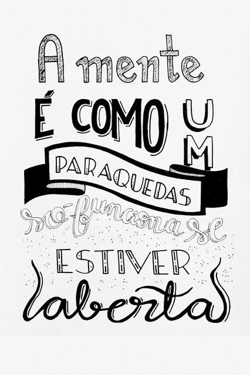

Oque é ansiedadePreocupação intensa, excessiva e persistente e medo de situações cotidianas. Podem ocorrer frequência cardíaca elevada, respiração rápida, sudorese e sensação de cansaço.

Causas comunsA ansiedade pode ser normal e é um indicador de doença subjacente somente quando os sentimentos se tornam excessivos, obsessivos e interferirem na vida cotidiana.
AutotratamentoAtividade física, uma dieta saudável, sono regular e exercícios de relaxamento podem ajudar a reduzir a ansiedade. Participar de um grupo de apoio também pode ajudar. Para controlar os sintomas de forma eficaz, é recomendável evitar a cafeína, o álcool e a nicotina.
A depressão foi mais prevalente entre mulheres com idade entre 40 e 59 anos. Com o tratamento adequado, 70-80% dos indivíduos com transtorno depressivo maior podem alcançar uma redução significativa nos sintomas.
AutotratamentoA depressão profunda é um problema médico melhor tratado por um profissional da área de saúde. Praticar exercícios físicos, reduzir a ingestão de álcool, evitar o consumo de drogas e relacionar-se com amigos e familiares também pode ajudar.
Procurar assistência médicaConsulte um médico imediatamente nos seguintes casos:*pensamentos suicidas;*incapacidade de trabalhar ou realizar atividades do dia a dia.
Marque uma consulta médica nos seguintes casos:*incapacidade de trabalhar ou manter relacionamentos;*abuso de álcool ou outras substâncias;*sensação de tristeza e desânimo.